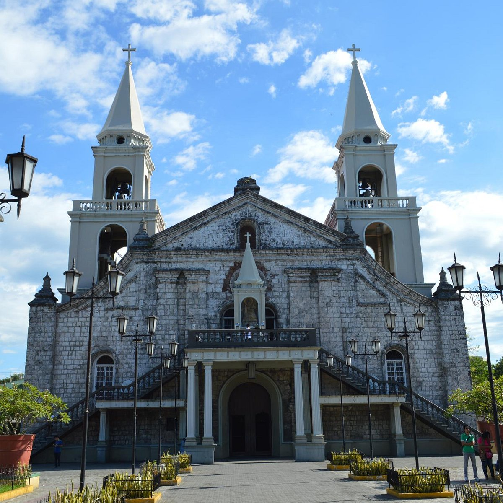

The history of the Archdiocese of Jaro and its iconic church, closely intertwined with the venerated image of Our Lady of the Candles, dates back to 1587. That year saw Jaro established as a parish, with its first church built and the discovery of the limestone image of Nuestra Señora de la Candelaria floating in the Iloilo River.
Initially under the Diocese of Manila, the parish became an independent diocese around 1874, with the present church structure built shortly thereafter. Despite suffering damage from the 1948 earthquake, it was restored in 1956 under Archbishop Jose Maria Cuenco.
Declared a historic landmark by the National Historical Institute in 1976, the cathedral gained further recognition when Pope John Paul II declared Our Lady of the Candles as the Patroness of Jaro District and Western Visayas during his 1981 visit. Notably, it became the second national shrine in the VisMin regions and the first Marian image in Asia to be personally crowned by a Pontiff.
The miraculous image of Our Lady of the Candles is renowned, said to have grown in size over the years and moved miraculously during transportation to the cathedral. Celebrated annually on February 2nd, the feast day of Our Lady of the Candles draws devotees from across the country, making it one of the largest Marian celebrations after Peñafrancia of Naga, Camarines Sur.
Formally known as the Jaro Metropolitan Cathedral and National Shrine of Our Lady of the Candles, the cathedral is also referred to as the Church of St. Elizabeth of Hungary, after its titular patroness. St. Elizabeth, known for her devotion to charity and simplicity, epitomizes the cathedral's commitment to serving the less fortunate.